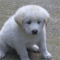
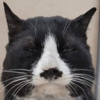

53 · 21 · 1 시간 전 · 원문
쉬었음청년 되버림
수집 당시 댓글 21개
boomstick · 2 시간 전

루미네스 · 2 시간 전
Epoch · 2 시간 전
보추퍼리게이진흥재단 · 2 시간 전
사료나 더 먹거라
AIᅠᅠᅠᅠ · 1 시간 전
얼굴보니 초심 잃고 뒷돈 받다 걸렸나보네
숨고르는중인청년 · 1 시간 전
녀석 마지막 족발거리시험을 통과못했나보구나
↳ 답글 · 노오루야캐욧 · 1 시간 전
그건 사람도 떨어지겠던데 ㅋㅋㅋ
↳ 답글 · 면상후려쳐 · 1 시간 전
순댑니다 형님
↳ 답글 · 니내누군지아니 · 1 시간 전
나가있어
isnrnsli91 · 1 시간 전
HuntingSoul · 1 시간 전

번하고뻗음 · 1 시간 전
근데 사진 세개가 다 다른강아지냐
↳ 답글 · 슈프림핏자 · 1 시간 전
https://youtu.be/SR-1I25eLDc?si=ZdyN38Ng-Nasm73q귀엽자나~
새로운메모장 · 1 시간 전
녜? 졔가요 웨요?
파이어펀치 · 1 시간 전
아래쪽 썸네일 입에 물고있는거 뭐냐
유루캠 · 1 시간 전
나가살으아라 · 1 시간 전
합격하면 몇 년은 떨어져 살텐데 굳이??
달려가자 · 1 시간 전
유유나기 · 1 시간 전
기죽지말어 개새끼는 원래 쉬는거야
해으응 · 1 시간 전
ㄱㅇㅇ
야율아보기 · 1 시간 전
쉬했음 자견
